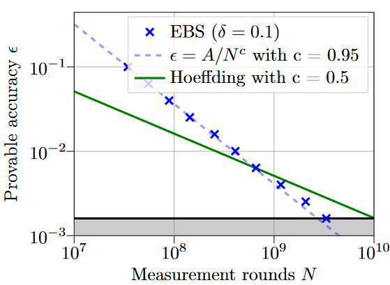

About my Thesis
The title of my bachelor's thesis was "Adaptively measuring quantum expectation values using the empirical Bernstein stopping rule".
Overview
We studied an application of the empirical Bernstein stopping rule[1] (EBS) in quantum computing. See the reference below for the original paper.
Here, \(\overline{X}_t\) is the empirical mean, \(\mu\) is the true mean, \(\overline{\sigma}_t\) is the empirical standard deviation, \(R\) is the range of the random variable, \(t\) is the number of samples, and \(\delta\) is the confidence parameter.
The goal was to estimate quantum expectation values with a required accuracy \(\epsilon\) and confidence \(1 - \delta\) while minimizing the number of measurement shots.
The figure below compares EBS with a sampling bound based on Hoeffding's inequality for estimating the ground-state energy of NH3. We set the accuracy \(\epsilon\) to chemical accuracy, i.e. \(0.0016\,\mathrm{Ha}\). In this example, EBS requires fewer samples to reach the target accuracy.

[1] Mnih et al., 2008